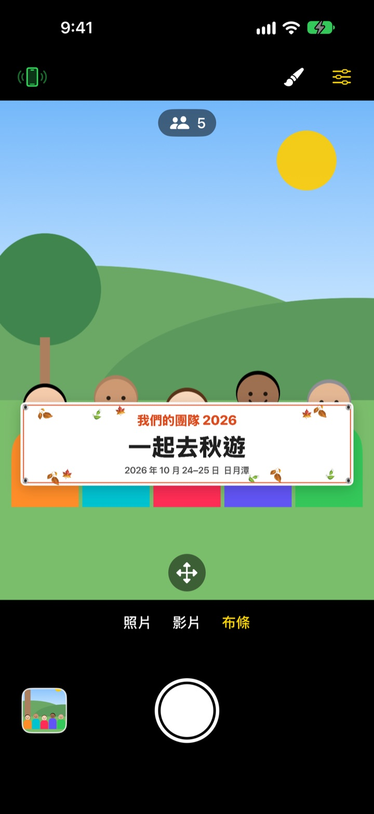
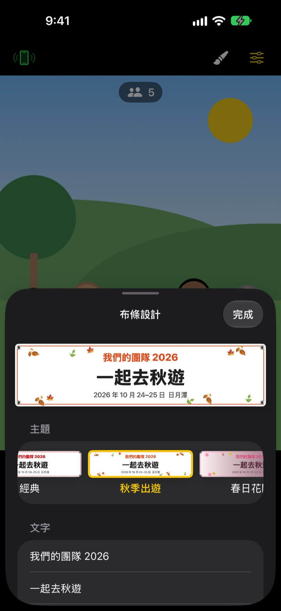

拿布條的團體照，
不用真的布條
寫好文字、選個主題，畫面中的布條就會穩穩出現在大家面前。朋友的 iPhone 掃一下 QR code就變成遙控器，負責拍照的人也能一起入鏡。
所有功能免費。支援 iOS 17 以上版本。

親手做一條布條
改改文字，點一個主題看看。按下快門後，會像 App 裡一樣倒數 3 秒再拍。
為了一張合照，還在特地訂做布條？
為了出遊的一張合照去訂做布條，當天還要帶過去，用完又不知道收哪裡。沒人幫忙拍，總有一個人進不了照片。ShutterLink 把布條放進相機畫面，再把朋友的 iPhone 變成遙控器，讓每個人都能拿著布條一起入鏡。
一分鐘做好專屬這次聚會的布條
從秋季出遊、春日花開、尾牙、生日、運動會、畢業、婚禮、公司研討會等 13 種主題挑一個，再親手寫三行文字。
背景、字體、裝飾、顏色和比例都能改，還能放上 Logo 圖片。材質可選布料、帆布和紙張，布質布條會像真的一樣下垂、起皺、隨風飄動。

遙控器不必安裝，掃碼就能用
點左上角的遙控按鈕，就會出現 QR code。朋友用內建相機一掃，ShutterLink Remote 會以 App Clip 形式立刻開啟並連線。
遙控器的即時畫面連布條都看得到，構好圖直接按快門就好。拍好的照片會馬上傳到遙控 iPhone，沒裝 App 的朋友也能當場儲存和分享。
三個步驟就能開拍
- 1
架好 iPhone
打開 ShutterLink，把手機放在腳架或架子上。
- 2
放好布條
在下方選擇布條，用畫筆按鈕設定文字和主題，再點一下大家要站的地面。
- 3
舉起手掌
舉起手掌或按下遙控器快門，倒數結束就會拍攝。
為團體照準備的功能
- 手掌手勢・拍手快門
- 對著鏡頭舉起手掌，或用力拍一下手，就會開始倒數
- 微笑快門
- 所有人都睜眼微笑時自動拍攝
- 倒數 3・5・10・20・30 秒
- 語音倒數、閃光燈同步閃爍，遙控器也會在手中震動提醒
- 提醒大家看鏡頭
- 按一下，拍攝用的 iPhone 會出聲提醒，把大家的視線拉過來
- 連拍 3 張・5 張
- 自動挑出所有人都睜眼微笑的最佳照片，也能在圖庫換成其他張
- 人數・邊緣・水平儀
- 計算畫面中的人數，有人被擠到邊緣或畫面歪了都會提醒
- 間隔拍攝 3 秒到 1 分鐘
- 依固定間隔記錄夕陽或製作過程
- 相機控制
- 點一下對焦與測光、曝光補償、閃光燈、格線、0.5 倍到最高 10 倍變焦（依機型而定）、前後鏡頭切換、錄影
- 簡易模式
- 遙控器只顯示一個大大的快門按鈕，長輩也能輕鬆按
- 音量鍵・相機控制按鈕
- 不用遙控器，直接在拍攝用的 iPhone 上按快門
布條模式下無法使用閃光燈、連拍、變焦和前鏡頭。倒數、手掌快門和遙控器都照常可用。
所有功能都免費
免費
- 布條模式和 13 種主題
- 不必安裝的遙控器（App Clip）
- 手掌、拍手、微笑快門與倒數
- 最佳照片、人數統計、水平儀
- 錄影與間隔拍攝
贊助開發者（選用）
- 可以在設定中選擇小、中、大三種贊助
- 贊助不會解鎖或限制任何功能
不是訂閱，只有贊助時付款一次。
沒有廣告，也不必註冊帳號。
常見問題
需要準備什麼？
在拍攝用的 iPhone 安裝 ShutterLink（iOS 17 以上）。當遙控器的 iPhone 不必安裝，只有第一次開啟 App Clip 時需要連網。兩支 iPhone 都要開啟藍牙，並放得近一點（通常在 10 公尺內）。
掃了 QR code，App Clip 卻沒有開啟。
請確認遙控 iPhone 有連上網路。也可以不掃碼，在 ShutterLink Remote 畫面輸入拍攝 iPhone 上的 4 位數連線碼，再點「連接」。另外請到「設定 › 螢幕使用時間 › 內容與隱私權限制」確認 App Clip 沒有被限制。
一直停在「正在尋找相機…」。
拍攝用的 iPhone 必須讓 ShutterLink 保持在螢幕上。請在兩支 iPhone 的「設定 › 藍牙」確認藍牙已開啟。連線碼每次開啟 App 都會改變，如果重新開過 App，請用新的 QR code或連線碼，再點「重試」。
出現「藍牙權限遭拒」。
請到「設定 › 隱私權與安全性 › 藍牙」開啟 ShutterLink。遙控端是 App Clip，可能不在列表中，這時請重新掃一次 QR code，並在權限詢問中點「允許」。
即時畫面卡卡的或很模糊。
即時畫面為了透過藍牙傳送，刻意縮成小尺寸。實際的照片和影片會以拍攝 iPhone 的原始畫質儲存。兩支手機之間有牆、有人或距離太遠時可能會卡頓，但快門和其他操作仍然有效。
拍好的照片在哪裡？
儲存在拍攝 iPhone 的「照片」App 和 App 內的圖庫。遙控 iPhone 也會收到一份，但不會自動儲存，請在關閉遙控器前儲存或分享。如果「照片」裡沒有，請到「設定 › 隱私權與安全性 › 照片」允許 ShutterLink 取用。
影片沒有聲音。
請到「設定 › 隱私權與安全性 › 麥克風」開啟 ShutterLink。
可以連接好幾個遙控器嗎？
可以。多支 iPhone 能用同一個 QR code或連線碼同時連線，不論從哪一支按快門，拍的都是同一台相機。
拍攝時連線中斷了。
ShutterLink 開啟時會讓螢幕保持亮著。按側邊按鈕鎖定或切到其他 App 都會中斷連線，所以拍攝期間請讓 App 一直顯示在螢幕上。
照片會上傳到哪裡嗎？
不會。兩支 iPhone 透過藍牙直接連線，照片和影片只留在拍攝的 iPhone 和連上的遙控器。在沒有訊號的山上或海邊也能用，也不需要帳號。
問題還沒解決或發現錯誤？請寫信到 leeo@kakao.com。附上兩支 iPhone 的機型和 iOS 版本，能更快幫你查明原因。